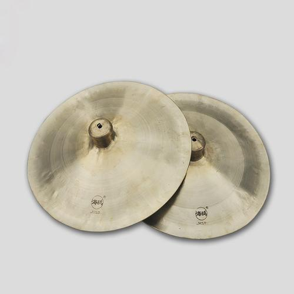

川剧乐器大钹

大钹又名大镲，圆形（中间突起），铜制。两面为一付，每面直径约一尺。大钹无固定音高，用一线记谱。大钹声音宏亮，多用于合奏和戏剧、歌舞的伴奏。在民间鼓乐演奏中常在乐曲强拍击奏，用法与大锣相近。大钹音量大而余音长，不宜演奏过密的音型。钹除汉族广为使用外，在藏、壮、彝、侗、傣、景颇、佤、白等少数民族中也广为流传。钹由响铜制成，构造简单。钹在地方音乐及管弦乐队中应用广泛，在少数民族中亦相当流行。 钹的构造简单，钹体为一圆形金属板，用“响铜”制成，中部隆起的半球形部分称“碗”或“帽”，碗根与钹边之间叫作“堂”，碗是钹的固定点，顶部钻有小孔，用绸或布拴系，叫“钹巾”，演奏者须取站姿，用双手通过钹巾持住钹身，相击后振动发音。也可以悬挂在支架上，用鼓槌滚奏，表现力很丰富。
钹属于金属体鸣乐器，无固定音高。其音响洪亮而强烈，穿透力很强，善于烘托气氛，是各种管弦乐队和地方吹打乐队中必不可少的色彩性打击乐器，在吹打乐等地方乐种中在用于强奏时，极富气势，通常表现一种激情；用于弱奏时，其作用类似大鼓，属于节拍乐器。
根据钹的大小及重量等不同，钹分为双光钹、水钹、京钹、小钹等几种，其中小钹和京钹发音较高，多用于京剧等地方戏曲中的武戏或伴奏吹打曲牌，常与奉锣和仿苏锣配合使用；双光钹和水钹发音较低，多用于文戏，与虎音锣或中堂锣配合使用，其中双光钹是粤剧的主要伴奏乐器。在民族管弦乐或器乐合奏中，双光钹和小钹也已成为重要的节奏乐器。